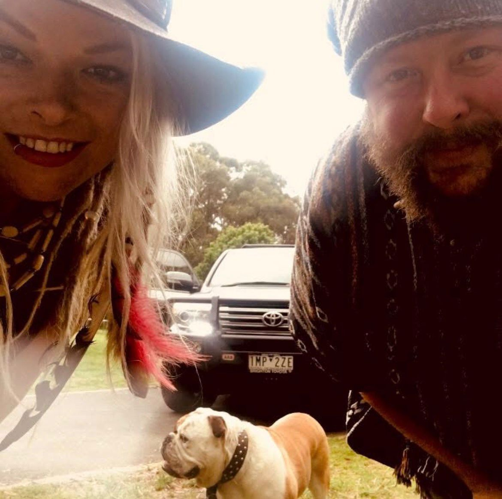
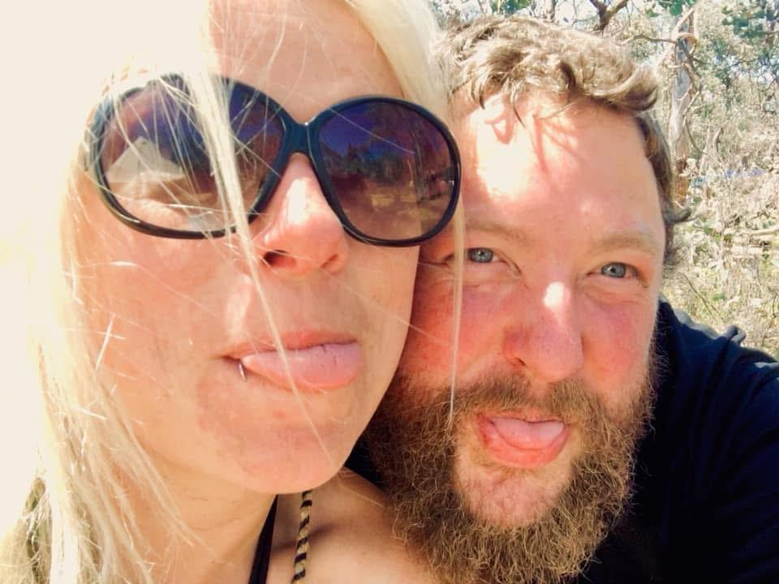
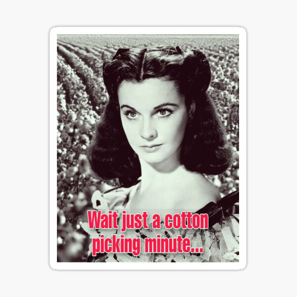

Well, The Department of Agriculture had me fired. It was an awful experience. It took me months to understand what had happened and even longer to recover. It was seriously traumatic. In short, I was scapegoated. There was a mistake made and covered-up by people much much higher up the ladder than me. Millions wasted and I simply got too close to it by being a competent employee and a gifted communicator. I made myself a threat to a work place that valued a young, naive staff that do not ask questions and yes to everything. Even now, it feels like I am writing as a consipracy theorist, but these things really do go on. Allegations were brought against me, a laundry list of awful attocities I did such as printing 2 pages for personal use (totally covered by the acceptable use policy). In the end, the fact I had lost my licence was their only official reason for reccomending my termination to the secretary. Funny how that was ok for three months and suddenly not ok for the second three months. Hardly worth losing a valuable employee over. Even if everything else is wrong, I had exceeded so many goals in my short time there, it very strongly seems like the appropriate response would be to support me to improve if all these supposed failures are true, I was never told I was nand never afforded any opportunities to improve which is a right in the probation code. The fact is, I fucked up by saying one wrong thing in the office, a thing I am allowed and encouraged to say, and I paid for it. The director heard me, but misunderstood me, and would not allow me to clarify when I approached him, he refused to talk to me, assured me everything was fine, and then brought a world of allegations against me. After years of study, and disappopintment trying to get a job, being poor for 8 years, struggling, gaining weight and being fed up, this really hit me hard. But what hit me harder was that at the same time, Lana dropped me as a friend. Mid-conversation.
It devastated me. I actually responded physically. My gout flared up, both my knees where so swollen. I couldn't walk for months. I was humiliated. I was unemployed at Christmas time. I was literally crawling from my bed to the couch. I broke down physically and mentally. I had to process being rejected by my work AND by my closest freind. A friend who not long before I had proposed to. Well, I decided that 2026 was a year for me to take as long as i need to recover. To be gentle with myself. To make art, enjoy nature and be calm. My body has been scaring me. My mobility is completely gone. I can't do simple things I've always been able to do. I haven't gone backwards, I've completely collapsed. I am slowly now working on trying to repair. I am in therapy, I am seeing a regular GP again, and starting medications to help me. One medication is antidepressants for the first time as I am truly struggling.
Antidepressants are awful. I felt much much worse. I couldn't cum. It was just sadness maximised. I was lost. I was lazily applying for things still, but only the BEST opportunities. I came super close to a PhD with Melbourne Uni and CSIRO and Melbourne Water and Bunurrong researching urban Billabongs. That would have been incredible, but I came second, so it didn't happen. I was offered a job with fisheries out at Gippsland, it pays nearly a hundred grand, but I didn't want it. I applied for a few international PhDs, and some jobs, but not many. I was kind of targeting Scandenavia. I kind of just paused life. I know how well-qualified I am and I know my value and I actually just sat and trusted the right thing would happen without any push... and then out of the blue, I recieved a long message that I initially thought was a scam. but it mentioned Smith by name. I somehow realised it was Hannah.

Me and Hannah - every girl wanted to be with us every boy wanted to be us haha
A road to recovery comes when you aren't looking for it
So Hannah was an incredibly close friend for twenty years. Our children grew up together. Me and Hannah kind of did too. We met in high school. The point here, is that Hannah showed me love by reaching out. Suddenly, I no longer felt I was being abandoned by everyone I had ever met. I felt valued, wanted, missed and loved. Hannah allowed me to forgive myself for things I hadn't done, and to understand I am worthy of giving and recieving love. Our reconnection was strong and it felt just full and natural as it once did seven years ago. But more respectful, more careful. Hannah was really careful about me and showed me that she really intended to do everything she can to keep me and not repeat history. I can't thank her enough for trusting her instincts to reach out to me again. I wasn't brave enough. Well, as tends to happen, when good things begin to happen, momentum begins to grow, other things hop in under the covers too. I was offered an oppportunity to interview for a PhD I didn't even remember applying for. Well, actually it's a cool PhD. It's in Darwin. The top end adventure may continue after all.

I just got my friend back - but the adventure is only just beggining
Ok, so I interviewed well, and was offered the PhD. The second time I was the preferred candidate, so I'm proud of that and it does make me feel my worth. It is all about BT resistance on a cotton pest so it has sponsors with deep pockets. Bayer, Cotton Australia, CSIRO, Charles Darwin University. The science will be really good for me, population dynamics and genetics work. Its pretty cool. I'm comfortable with my supervisors, I talked about whether or not we are happy with Bayer ethically in the interview, I satisfied my reservations about secrecy that saboutaged me at the department of ag, because secrecy and closed conversations was the bread and butter of that workplace and it is now a huge red flag for me and I won't enter into a situation like that again. I have shifted mentally. I am not looking to promote myself, but I am also not looking to be pushed around. I am chosing what I want in life. I am chosing kindsness and openess deliberately and when my ethics are compromised, I am chosing to continue to speak up even though behaving that way has already cost me multiple jobs, because I won't accept poor behaviour and I will hold those around me accountable for poor behaviour. The world will simply have to find a way to catch up. I am hoping I can begin the PhD as soon as possible, but I am aslo hoping I can move to Darwin next year about late February. I want to have summer here. where I can dive all summer and then go study bugs and genetics and population dynamics and whatnot. Oh I am so Jazzed about Darwin. I remember so many little things. Mindle beach market, possum tree cafe, endless tides, lots of hippies, theres a long list of things I couldn't do last time I was there, I will look forward to spending a good amount of time there as long as it's not forever.

Wait a cotton-pickin' minute